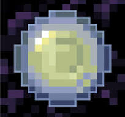

This project is a massive origins project and mod containing over 13 origins. It features insane origins all built with multiple systems created to completely transform your gameplay loop!

Ready to look into the origings and learn all the lore? All the custom entries reside right here:
Explore Origins Wiki →Information about the different character classes, their biological lore, and spatial void abilities will go here.
Every origin includes progression layers like custom level systems, ascensions, origin-specific weapons, and special combat proficiencies.